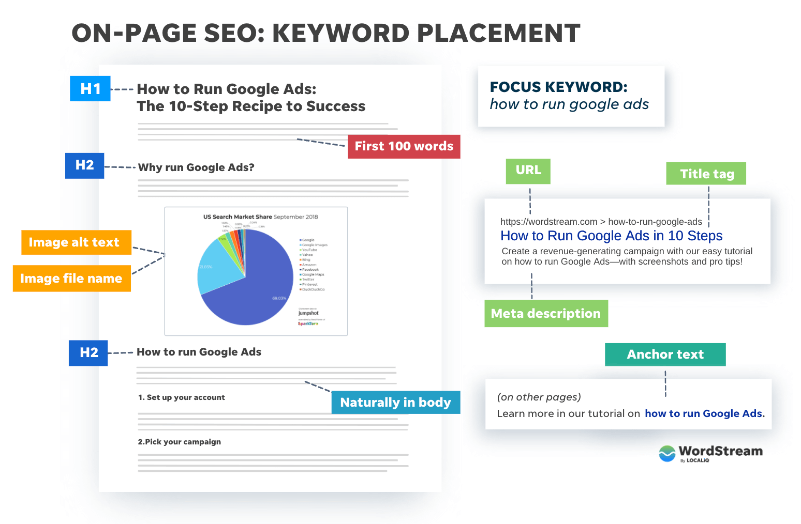

SEO audit 100kolektiv.cz
SEO nastavení webu 100kolektiv.cz vyhledavačům komplikuje indexaci a zobrazování i při relevantních uživatelských vyhledáváních. Na Google výsledcích se zobrazuje minimum stránek, a na nich se renderuje nežádoucí obsah.
Příčin je víc: web chronologicky dříve zobrazuje placeholdery obrázků než samotné obrázky, stránkám chybí meta popisky, web má špatně nastavený jazykový tag (en-US místo cs-CZ), a na webu jsou duplikované stránky s URLs "-copy", "-copy-copy".
generický dotaz na web

Priority
1. Google neindexuje obrázky. Kromě loga všechny obrázky na webu používají base64 placeholder v atributu src a skutečná URL je až v data-src. Zjednodušeně řečeno: obrázky se zobrazí lidským návštěvníkům v prohlížeči, ale Google si jejich URLs nedokáže načíst a ukazovat je ve výsledcích, protože pro zobrazení obrázku využívá src.
Problém se týká celého webu a příčinou je pravděpodobně šablona nebo editor Gridder, které to dělají jako formu lazy loadingu (načítání obrázků až ve chvíli, kdy na ně uživatel doscrolluje pro zrychlení načítání celé stránky) – vylučovací metodou tak soudím i podle toho, že Google zobrazuje logo, což je asset, který mu nemusí poskytovat šablona nebo editor stránky. V no-code nastavení šablony ani Gridderu jsem nenašel způsob, jak toto chování na obsahových stránkách změnit.
kód jednoho renderovaného obrázku
<img class="lay-image-responsive setsizes"
src="data:image/png;base64,R0lGODlhFAAUAIAAAP///wAAACH5BAEAAAAALAAAAAAUABQAAAIRhI+py+0Po5y02ouz3rz7rxUAOw=="
data-src="https://www.100kolektiv.cz/wp-content/uploads/2025/10/BYL-VIZUALIZACE-INSTA-A-min_hor-265x150.jpg"
data-srcset="https://www.100kolektiv.cz/wp-content/uploads/2025/10/BYL-VIZUALIZACE-INSTA-A-min_hor-265x150.jpg ... </img>výsledky Google images

2. Chybí meta popisy. Jednotlivé stránky nemají vyplněný meta description, což je text do 160 znaků, který se zobrazuje ve výsledcích vyhledavačů. Google proto buď zobrazí „Popis není k dispozici", nebo si vybere náhodný text ze stránky, např. menu. To snižuje zajímavost webu pro lidské návštěvníky a nevyužívá klíčová slova pro organické zvýšení návštěvnosti.
Tento problém jde snadno napravit vyplněním polí v Rank Math SEO pluginu na každé stránce. Vyhledavač také preferuje, když H1 a Title jsou stejná hodnota. Meta popisky jsou easy win pro vylepšení vyhledatelnosti bez přidávání nového obsahu pro zachycování klíčových slov na obsahových stránkách. Best practice je tyto hodnoty vyplnit před publikací nové stránky, aby vyhledavače rovnou zaindexovaly požadovaný obsah a nebylo nutné toto měnit a monitorovat později.
jak se stránka zobrazuje na google

jak meta popisky upravit (pole description)

3. Chybí H1 nadpisy. Většina stránek nemá hlavní nadpis H1. Ten je pro vyhledávače klíčový signál o tématu stránky a bez něj si smysl stránky musí domýšlet na základě až následujícího obsahu. Níže uvedený obrázek ilustruje hierarchii obsahu při signalizování vyhledavačům. H1 by měl být na každé stránce, ale nemusí být nutně zobrazen uživatelům. Toho jde dosáhnout v kódu (např. nastavením css display: none;), případně v některých šablonách.
strukturování obsahových stránek
4. Špatný jazykový tag. Web deklaruje jazyk jako en-US, přestože obsah je česky. To Google mate při určování relevance pro české dotazy. V nastavení WordPressu jde upravit v Settings → General → Site Language. Správné nastavení vyhledavači pomáhá správně určit cílovou skupinu webu.
5. Problematické URL adresy. Tři stránky mají URL s příponami „-copy" nebo „-copy-copy" (např. bytovy-dum-louka-copy-copy), přičemž obsahují úplně jiný projekt (Náměstí Nový Lískovec). Matoucí jak pro vyhledavače, tak pro návštěvníky.
6. Chybí strukturovaná data. Žádná stránka neobsahuje Schema.org markup. Pro architektonické studio by bylo vhodné přidat minimálně Organization schema a pro jednotlivé projekty CreativeWork. Přímo pro toto existují WP pluginy. Vyhledavači to poskytuje více kontextu o webu při rozhodování, zda jej zobrazit na potenciálně relevantní uživatelské vyhledávání.
7. Obrázky nemají alt texty. Aktuálně existují pouze 2 unikátní hodnoty alt textů na webu se stovkami obrázků. Každý obrázek by měl mít popisný alt text, např. „Vizualizace bytového domu Louka – pohled z ulice". Menší priorita, ale alt texty také pomáhají vyhledavačům pochopit, co na obrázku je, a tedy zda jej zobrazit při potenciálně relevantním uživatelském vyhledávání.
Přehled stránek
Stránky seřazené podle závažnosti problémů (vyšší skóre = více problémů). Celowebové úpravy zahrnují výše uvedené body.
| Stránka | H1 | Skóre | Akce |
|---|---|---|---|
| About – MBP – 2 | ✗ | 13 | Smazat nebo 301 redirect na /about/ (duplicitní stránka) |
| Úvodní stránka | ✗ | 10 | Přidat H1 (může být skrytý v CSS) |
| About | ✓ | 9 | Pouze celowebové opravy |
| Lab | ✗ | 9 | Přidat H1 |
| TOP_10 EMERGING ARCHITECTS | ✓ | 9 | Zvážit přejmenování URL (top10 → top-10-emerging-architects) |
| Projekty | ✗ | 8 | Přidat H1 |
| TEXT_FROM SELF-ISOLATION... | ✓ | 8 | Pouze celowebové opravy |
| Lab (kategorie) | ✗ | 7 | Přidat H1, zvážit sloučení s /lab/ |
| Work (kategorie) | ✗ | 7 | Přidat H1 |
| Náměstí – Nový Lískovec | ✓ | 7 | Nová URL + 301 redirect z bytovy-dum-louka-copy-copy |
| Galerie Cti u Koruny | ✓ | 6 | Nová URL + 301 redirect z bytovy-dum-louka-copy |
| Bytový dům Louka | ✓ | 5 | Pouze celowebové opravy |
| Sídliště Čs. odbojářů Chodov | ✓ | 5 | Pouze celowebové opravy |
| Červenáček – ZŠ Řevnice | ✓ | 5 | Pouze celowebové opravy |
| Revitalizace ZŠ Březno | ✓ | 5 | Pouze celowebové opravy |
Next steps v optimizaci vyhledatelnosti
Pro primárně vizuální web je správné indexování obrázků klíčové. Je ale možné, že způsob renderování obrázků nepůjde změnit bez zásahu do kódu šablony vývojářem webu, případně přechodem na jinou šablonu.
Po iteracích změn také doporučuji stránku napojit na Google Search Console, nahrát tam sitemapu (pro usnadnění crawlování vyhledavačem), a upravované stránky aktivně zadávat k reindexaci pro rychlejší zobrazování změn na Google výsledcích. Google Search Console také poskytuje data k měření efektivnosti zásahů do SEO parametrů.
Pro sdílení obsahových stránek na sociálních sítích a chatových appkách nejsou definované náhledové obrázky, což může vést buď k absenci obrázku u odkazu, nebo vytažení náhodného ze stránky – typicky loga (s průhledným pozadím a v nevhodném formátu). Vyplnění hodnot zajistí, že sdílené odkazy budou obsahovat požadovaný náhledový obrázek a text, což pomáhá s prokliky na web. Jde upravit na jednotlivých stránkách skrz Rank Math SEO plugin dle screenshotu níže: